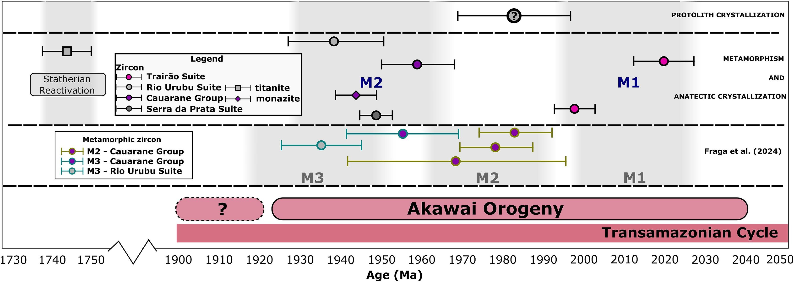

Zircon, monazite and titanite U-Pb geochronology revealing Orosirian metamorphic events within the Guiana Shield, Amazonian Craton

Resumo em Português
A petrografia associada à geocronologia U-Pb em migmatitos permite observar os processos e mecanismos envolvidos na geração e transformação da crosta continental durante as orogêneses. Este estudo enfoca rochas de alto grau de quatro unidades litoestratigráficas no Escudo das Guianas, Cráton Amazônico: a Suíte Trairão, o Grupo Cauarane, a Suíte Rio Urubu e a Suíte Serra da Prata. Os estudos petrográficos e geocronológicos dessas unidades revelam que a Orogenia Akawai Orosiriana ocorreu de aproximadamente 2,04 a 1,93 Ga. Durante esses 110 milhões de anos, dois eventos de alto grau ocorreram associados à fusão parcial e ao magmatismo. O evento metamórfico M1 (2,02–1,99 Ga), representado por uma diatexita cinza da Suíte Trairão, está relacionado à fusão parcial com presença de fluidos em condições de fácies anfibolito. A idade da anatexia (2,02 Ga) foi obtida em zircão de um enclave de metatexita diorítica na diatexita. A cristalização do fundido gerado nesse evento ocorreu em 2,00 Ga, obtida em zircão da diatexita cinza. Metatexita a hornblenda-biotita (Suíte Rio Urubu), metatexita a granada-sillimanita-feldspato-K (Grupo Cauarane) e gnaisse a clinopiroxênio-hornblenda-ortopiroxênio (Suíte Serra da Prata) registram o segundo evento metamórfico de alto grau M2 (1,97–1,93 Ga). A anatexia do Grupo Cauarane ocorreu por desidratação de biotita em condições de fácies anfibolito superior a granulito. A cristalização do fundido anantetico no Grupo Cauarane ocorreu entre ~1,96 Ga (bordas de zircão metamórfico) e 1944 ± 5 Ma (U-Pb em monazita). A fusão parcial com fluxo de água na metatexita a hornblenda-biotita (Suíte Rio Urubu) ocorreu em condições de fácies anfibolito, com a cristalização do fundido anatetico em 1938 ± 11 Ma. O metamorfismo em fácies granulito ocorreu em lentes de gnaisse a clinopiroxênio-hornblenda-ortopiroxênio da Suíte Serra da Prata em 1949 ± 4 Ma (zircão metamórfico), contemporâneo à colocação de magma seco. Uma reativação Estateriana ao longo de zona de cisalhamento de direção NE-SW no centro do Escudo das Guianas foi identificada em titanita em metatexita a hornblenda-biotita (Suíte Rio Urubu), provavelmente induzida pela acreção do Cinturão Rio Negro (1,86–1,72 Ga).